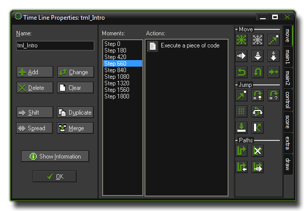

Timelines 时间线
时间线功能让你能够根据一组时间节点来创建和控制实例以及动作。
Timelines offer you a way to create and control instances and actions over a set time period.
在大部分游戏中，你可能希望一些事情在特定的时间里发生。通常，你可以使用定时事件来完成这件事，但是当你的要完成的事情过于复杂的时候这根本行不通，特别是你只有12个定时器可以用。这正是为什么我们提供了时间线资源。
在一个时间线中你可以指定在某个游戏中的时间点执行某些特定的动作。你可以像在对象的事件中一样去调用各种动作。当你创建了一个时间线以后，你可以让一个对象绑定上它，然后这个对象的实例就会在你指定的特定时间点上执行这些动作。让我们举个例子来说明如何使用时间线：
假设你想做一个守卫，这个守卫需要向左走20时间步（step），然后向上走10步，然后再向右走20步，最后向下走10步回到原点结束。要做到这个，你可以通过创建一个时间线，在起始时间设置向左运动。然后在第20步处设置向上运动，接着在30步处设置向右运动，然后再第50步处设置向下运动，最后在第60步时停止运动。完成后，你就可以把这个时间线绑定在你的守卫上，然后这个守卫就会完全按照你计划中的那样行动了。你甚至可以在时间线中操作一个定时事件，这样这个事件就会每隔一定时间执行一次。这样你的守卫就可以在一个区域里巡逻了！
你也可以更加全局化的用时间线来控制你的游戏。创建一个看不到的控制器对象，绑定一个在特定时间点创建敌人的时间线。当你尝试过时间线以后，你一定会发现它是一个多么有力的工具！
注意 : 如果你在使用 GameMaker:Studio 免费版 你每个游戏只能最多创建5个时间线。更多细节参见 这里。
In most games you will want certain things to happen at certain moments in time. Now, you can try to achieve this by using the alarm events but when things get too complicated this won't work any more,
especially as you are limited to only twelve alarms. That's why we have the time line resource.
In a time line you specify which actions must happen at certain moments in game time, and you can use all the actions that are also available for an object in its different events. Once you create a time line you
can then assign it to an object, and the instance of that object will then execute the actions at the indicated moments of time when placed or created within a room. Let us explain this with an example :
Assume you want to make a guard and that this guard should move 20 time steps to the left, then 10 upwards, then 20 to the right, then 10 downwards and then finally stop. To achieve this you can make a
time line where you start with setting a motion to the left. You would then create moment 20 (a "moment" is just another way of saying "step") and set a motion upward, then at moment 30 a motion to the right,
at moment 50 a motion downwards and finally at moment 60 you would stop the motion. Once that is done, you can assign this time line to the guard and the guard will do exactly what you planned. You could
even set an alarm in the time line so that it is repeated after a certain length of time and in this way your guard can patrol an area!
You can also use a time line to control your game more globally. Create an invisible controller object, create a time line that at certain moments creates enemies, and then assign it to the controller object. Once
you start to work with it you will find out it is a very powerful tool indeed!
NOTE : If you are using the Free version of GameMaker:Studio you are limited to a maximum of 5 timelines per game. For more details see
here.
Creating A Timeline 创建一个时间线
要创建一个时间线，在 Resources 菜单中选择 Create Time Line，或者右击资源树里的时间线资源然后选择 Create Time Line，又或者直接点击窗口顶部的资源工具栏中的创建时间线按钮即可。无论你用那种方法，都会看到接下来的这个窗口：
To create a time line, choose Create Time Line from the Resources menu, or right click on the time line resource in the resource tree and select Create Time Line or you can just click on the create a time line icon found on the resource toolbar at the top of the main screen. Whatever method you choose will open the following window :

这个窗口和对象的属性窗口很类似，你可以在这里给时间线起一个名字（像其它资源一样，必须是个独一无二的名字），同时在右侧有一个动作列表以及一系列可用动作。甚至还有一个 Show Information 按钮来显示时间线的动作信息。不过在左边不再是时间列表，取而代之的是一个被称作时刻的列表。在时间线中，一个时刻等同于一步，因此时间线里的10个时刻等同于游戏中的10步，并且你在任何一个时刻都可以执行任意多的动作，然后被绑定上这个时间线的对象就会在特定的时间点里执行这些动作。注意，时间线可以在游戏中的任意时刻被启动，因此时间线中的时刻0代表的是时间线启动的那个时刻，而不是游戏或者房间开始的时刻。
It's very similar to the object properties window as you can specify a name for your time line (like all resources, this should be specific and unique), and with an action list and actions on the right, and there is even
a Show Information button that can be used to get an overview of all actions within the time line. However, on the left, instead of an event list we have a moment list. In a time line a moment is
the same as a step, so ten moments on your time line are the same as ten steps in your game, and you can insert any number of actions and/or code into one moment and the object that has the time line assigned
to it will carry out these actions at the required time. Note that the time line can be started at any time in-game, so moment 0 is just the moment in which the time line starts and not the moment the game
or room starts.
在窗口中还有几个按钮让你来添加、删除和更改时间线中的时刻：
- Add 添加. 这个按钮可以向时间线中添加一个时刻。你必须指定一个从时间线开始之后的游戏步数。然后你就可以向这个时刻中拖拽动作，就如同对象的事件一样。同样在这里你也可以使用命名化的代码动作，如果你不知道什么是命名化的代码，你可以参见脚本 - 添加注释和命名块。
- Change 修改. 这个按钮可以修改当前选定的时刻的时间。
- Delete 删除. 这个按钮可以删除一个或多个时刻范围。你必须设定要删除的时刻范围的起始与结束时刻。在这个范围之中的全部时刻都会被删除。
- Clear 清空. 这个按钮可以删除整个时刻列表中的所有时刻。
- Shift 平移. 这个按钮是用来平移一个时刻范围到一个新的时刻。你必须指定起始和结束的时刻范围，以及新的范围的起始时刻。如果不同的时刻出现重叠，那么它们的动作列表将会被合并。
- Duplicate 复制. 这个按钮的作用和平移按钮很类似，只不过这个按钮会创建一份时刻的拷贝。
- Spread 伸缩. 这个按钮可以让你延长或者缩短一个时刻范围。你指定要伸缩的范围的起始和结束时刻，再指定新的范围长度的百分比。100%意味着什么事也没有发生。一个小于100%的值意味着时刻之间的间隔变小了，而一个大于100%的值意味着时刻之间的间隔变长了。举例来说，在时刻5、8、12处分别有一些动作，然后你指定了起止时刻5至12以及200%的伸缩，那么这三个时刻会被分别移动至时刻5、11、19处（这些时刻之间的间隔翻了一倍）。同样，当时刻之间出现重叠，那么它们的动作会被合并。
- Merge 合并. 这个按钮可以把多个时刻的动作合并到一个时刻上来。你需要指定要合并的时刻范围的起始和结束时刻，合并后的动作会位于这个范围的起始时刻上。
请注意，虽然我们可以创建一个负数的时刻，不过这是完全没有意义的，因为它永远不会被执行！
The following buttons are available in this window to enable you to add, remove and change moments within the time line resource that you have created :
- Add. Use this to add a moment to the time line. You must indicate the moment, which is the number of steps since the time line was started. Now you can drag actions to the list as for object events. if you are adding in code actions then these can also be named, as explained in the section on Scripts - Adding Comments and Naming Code Blocks.
- Change. Use this button to change the time steps for the currently selected moment.
- Delete. Use this button to delete a moment or a range of moments. You must indicate the time step of the first moment to delete and the last one. All moments in between will be deleted.
- Clear. Use this button to clear the entire list of moments.
- Shift. Use this button to shift a range of moment to a new moment. You must indicate the start of the range, the end of the range, and the new time step to which the start of the range must be shifted. When different moments become the same their action lists will be merged.
- Duplicate. This is almost the same as the shift button but in this case a copy of the moments are made.
- Spread. Use this button to spread out a range of moments by adding time between them or put them closer together by removing time between them. You specify the start and the end of the range and the percentage for the spread. A percentage of 100 means nothing changes. For values smaller than 100 the moments are moved closer together and for values larger than 100 they are moved further apart. For example if you have moments at timesteps 5, 8, and 12 and you indicate as range 5:12 and a percentage 200, the moments will move to time steps 5, 11, and 19 (the intervals between them have doubled.) When different moments become the same their action lists will be merged.
- Merge. Use this button to merge a number of moments into a single one. You specify the start and the end of the range and they will all be merged into the start moment.
Please note, that although it is possible to create negative time moments, it is pointless to do so as they will never be executed!
-noisyfox-